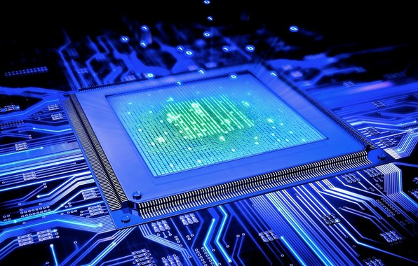

CAPITOLO 1
cos'è l'informatica:
L'informatica studia i procedimenti effettivi di elaborazione (e memorizzazione, trasmissione, ecc.) dell'informazione.
informatica come scienza:
Definizione: L'informatica è lo studio dei processi che riguar
dano la raccolta, l'elaborazione, I'archiviazione e la trasmissione delle informazioni.
Campi di studio:
1)Algoritmi e strutture dati.
2)Programmazione
3)Intelligenza artificiale.
4)Sistemi operativi e reti
Ruolo nella società: L'informatica è fondamentale in settori come l'economia, la medicina, l'ingegneria e l'istruzione.
breve storia dell'informatica:

Alan Turing è stato un matematico britannico. Nel 1936, ha pubblicato un articolo in cui descriveva il concetto di una macchina universale di Turing, un dispositivo teorico capace di elaborare qualsiasi tipo di calcolo. Questo concetto è diventato uno dei fondamenti del software moderno e ha portato allo sviluppo del primo computer programmabile.
John von Neumann è stato un matematico ungherese/ americano,che Nel 1945, ha pubblicato un rapporto in cui descriveva l'architettura di Von Neumann, che diventò il modello standard per la costruzione di calcolatori. Questo modello definisce la struttura dei calcolatori moderni, basati su processori che eseguono istruzioni dalla memoria.
solo negli anni '80 il software proprietario e il codice sorgente aperto cominciarono a diventare una questione di divisione, e numerose società informatiche vennero fondate per creare software commerciale. In seguito, la diffusione di Internet ha dato vita a una nuova fase dell'informatica, caratterizzata da interazione e condivisione di informazioni in modalità globale.
Evoluzione:
Dagli enormi computer mainframe degli anni '60, ai personal computer negli anni '80, fino alla rivoluzione del cloud computing e dei dispositivi mobili.
aspetti positivi della tecnologia:

ACESSO ALL'INFORMATICA:
Internet permette di accedere a conoscenze e risorse ovunque ci si trovi.
AUTOMAZIONE:
Migliora l'efficienza produttiva in vari settori (industrie, sanità, educazione).
COMUNICAZIONE GLOBALE:
Le tecnologie informatiche hanno reso la comunicazione istantanea e a basso costo.
INNOVAZIONE:
La tecnologia permette la creazione di nuovi strumenti e soluzioni per problemi complessi
aspetti negativi della tecnologia:

Dipendenza e isolamento: L'eccessivo uso della tecnologia può portare a isolamento sociale e dipendenza da dispositivi.
Cybercriminalità: L'uso illecito della tecnologia ha portato a una crescita dei crimini informatici (furto di dati, phishing, malware).
Perdita di privacy: I social network e i servizi online spesso raccolgono grandi quantità di dati personali.
Impatto ambientale: La produzione e lo smaltimento dei dispositivi elettronici ha un significativo impatto ecologico.
comportamento in rete:

Non rispondere in modo maleducato e soprattutto non offendere e non discriminare. Non usare parolacce.
Scrivere in maniera corretta, stando attenzione alla grammatica.
Non condividere spam.
Non usare il maiuscolo perché in rete è una forma di comunicazione aggressiva.
Rispettare la privacy. Richiedere sempre il permesso prima di pubblicare foto o video dove sono presenti altre persone.
Non pubblicare dati sensibili degli utenti.
Non pubblicare foto o video che presentino le persone in modo imbarazzante o che ne possano compromettere la vita sociale e professionale.
Inviare richieste e inviti solo alle persone che si ritenga siano interessate.
Evitare di pubblicare in bacheca messaggi che sono di interesse esclusivamente privato.
Taggare solo con il permesso della fonte.
Rispettare il copyright delle cose che riproducete, specificando sempre la fonte.
Controllare sempre che le informazioni che condividete siano corrette.
vai alla pagina indice
vai alla pagina copertina
vai alla pagina capitolo2